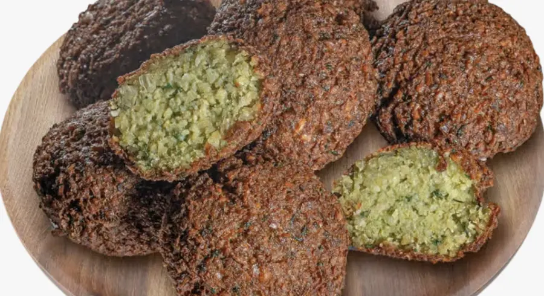
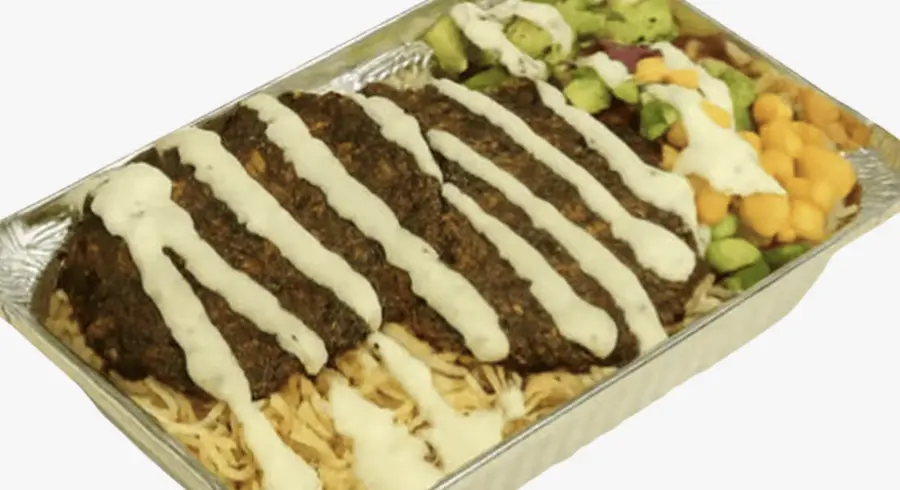
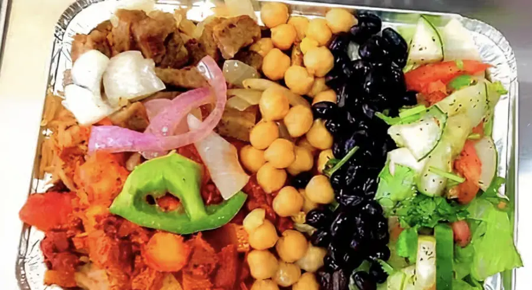

Halal
Combo Gyro
Chicken and lamb in warm pita with salad and any of Shahzad's sauces.



Chicken and lamb in warm pita with salad and any of Shahzad's sauces.
Lamb pieces with salad in pita — white, hot, tahini, BBQ, buffalo or green.
Crispy falafel, lettuce, tomato, onion and pickles on grilled pita.
Every platter and gyro comes with your pick.